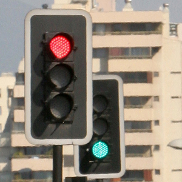
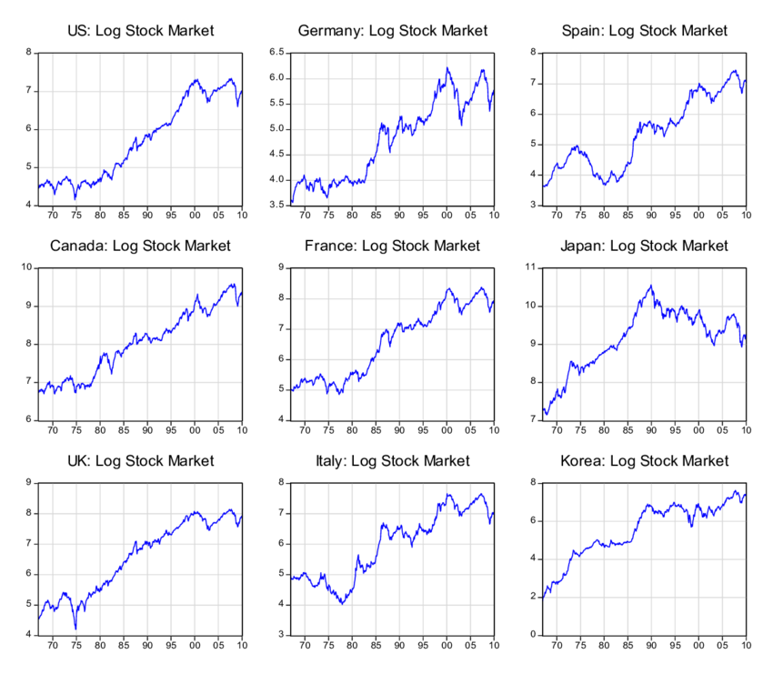
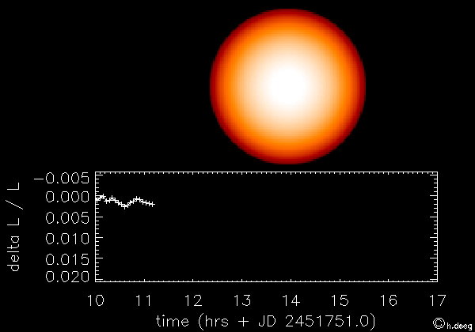
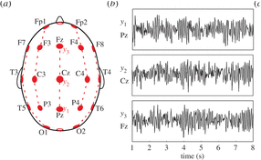
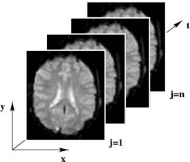
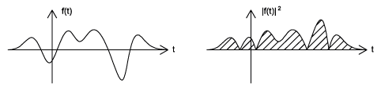

%matplotlib inline
import numpy as np
import matplotlib.pyplot as plt
from matplotlib import rcParams
rcParams['figure.dpi'] = 120
2. ¿Qué es una señal?¶
Definición de diccionario
Nota
Una señal es un signo, símbolo o gesto que entrega un mensaje relacionado a una situación particular
Ejemplo: Señales de advertencia de peligro (Vialidad, Chile)

Ejemplo: Semáforo chileno (Imagen tomada de Diario La Segunda)
{kind=link}
El mensaje que entrega la señal puede cambiar en el tiempo o en el espacio
Definición matemática
Podemos usar lenguaje matemático para formalizar la definición anterior
Nota
Una señal es una función del tiempo (u otra variable) que entrega información (mensaje) sobre un fenómeno físico
Una función es un mapeo entre dos variables
donde
\(x\) es la variable independiente, algunos ejemplos típicos son el tiempo (1d), la superficie (2d), el volumen (3d), etc
\(y\) es la variable dependiente, algunos ejemplos son el potencial eléctrico en un componente, la presión en el aire (sonido), la intensidad de un pixel (color), etc
Veamos algunos ejemplos de señales ¿Cúantas variables independientes y dependientes hay en cada caso?
Evolución de los mercados accionarios
{kind=link}
Transito de un exoplaneta frente a su estrella
{kind=link}
Actividad eléctrica cerebral en múltiples zonas del craneo
{kind=link}
Tensor de imágenes obtenidas con resonancia magnética
{kind=link}
2.1. Carácterísticas de una señal¶
Sea una señal definida como una función \(g(t)\) donde \(t\) es el tiempo (variable independiente)
Asumiremos que \(g(t)\) sólo existe entre \(t=0\) y \(t=T\)
En base a esto podemos definir su
Duración: Tiempo final menus tiempo final, en este caso: \(T\)
Energía: Corresponde a la norma de la señal
La energía es una medida del tamaño/área de la señal
Potencia: Energía por unidad de tiempo
que se mide usualmente en \(10 \log_{10}(P) [dBm]\) donde dB corresponde a decibel
La potencia mide la fuerza o intensidad de la señal
Razón señal a ruido (SNR): Corresponde a la potencia de la señal dividido por la potencia del ruido.
La SNR es una medida de la calidad de la señal
2.2. Clasificación de señales¶
En base a las características de sus variables
Podemos hacer una clasificación general de las señales en función del dominio de sus variables independientes y dependientes
Señal de tiempo continuo o de tiempo discreto
Señal analógica: variable dependiente continua
Señal digital: variable dependiente cuantizada (digital)
{kind=link}
Notemos que:
Las señales “naturales” son en general analógicas de tiempo continuo: Una señal analógica puede digitalizarse muestreando en el tiempo (reloj) y cuantizando en su magnitud
Los sistemas de comunicación digitales se basan en pulsos eléctricos de tiempo discreto
Hoy en día las tecnologías digitales han reemplazando a las análogicas ¿Por qué?
La comunicación digital es más resistente al ruido y a las distorsiones (Lathi & Ding, 2009, Sec 1.2)
En base a su comportamiento
También podemos clasificar una señal según como la podemos modelar matematicamente
Una señal determinística es aquella que puede describirse completamente por una ecuación matemática
Ejemplo: Una sinusoide en el tiempo con frecuencia fundamental \(f\)
Por otro lado una señal estocástica es aquella que sólo puede ser descrita probabilisticamente, es decir en términos de su densidad de probabilidad
Ejemplo: Una señal de ruido Gaussiano con media \(\mu\) y covarianza \(\Sigma\)
Nota
Si bien esto es útil para ordenar las ideas hay que considerar que en muchos casos tendremos señales que combinan aspectos determinísticos y estocásticos
x = np.linspace(0.0, 5.0, num=1000)
fig, ax = plt.subplots(1, 2, figsize=(10, 4))
ax[0].plot(x, np.cos(2.0*np.pi*1.124*x), linewidth=2)
ax[0].set_title('Señal determinista')
ax[1].plot(x, np.random.randn(len(x)))
ax[1].set_title('Señal estocástica');
También podemos clasificar una señal según su comportamiento en el tiempo
Señal periódica: es aquella que se repite luego de un cierto tiempo P. Este tiempo se denomina periodo
Señal aperiódica: es aquella que no se repite regularmente en el tiempo.
x = np.linspace(0.0, 5.0, num=1000)
fig, ax = plt.subplots(1, 2, figsize=(12, 4))
ax[0].plot(x, np.sin(2.0*np.pi*1.0*x)*np.sin(2.0*np.pi*0.5*x) + 0.1*np.random.randn(len(x)), linewidth=2)
ax[0].set_title('Señal Periódica')
ax[1].plot(x, x + np.random.randn(len(x)))
ax[1].set_title('Señal Aperiódica');
Resumen
Podemos describir y clasificar una señal según
La dimensionalidad de sus variables
El dominio de sus variables
Los modelos matemáticos que la describen
Su comportamiento temporal o espacial